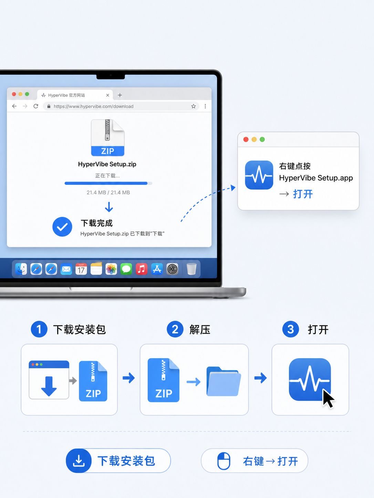
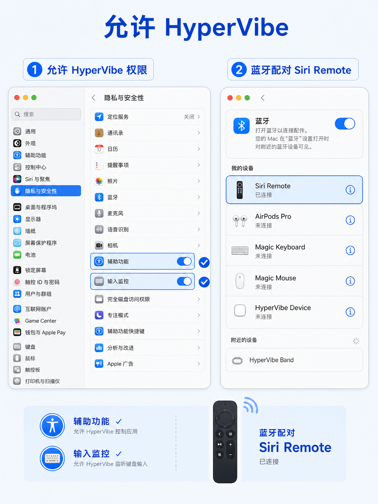

🙋 先确认这三样
💻
一台 MacmacOS 13 及以上
Apple 芯片（M1 及以后）🎮
第三代遥控器Apple TV 遥控器（2022 款，
USB-C 充电口的那款）🔗
能连蓝牙Mac 有蓝牙功能即可
（Mac 基本都自带）
💡 不确定遥控器型号？看充电口：是 USB-C 的就是第三代，这个教程支持它。
1
下载一键安装包
点下面绿色按钮，下载一个小文件（约 3.6 MB），然后解压。不用懂任何命令行。
⬇️ 下载一键安装包
文件名：HyperVibe-Full-Setup-1.1.0-macmini-beta.2-arm64.zip

下载 → 解压 → 准备打开
⚠️ 如果在浏览器里下载时被提示"此文件不安全"，点「保留」即可——这是开源个人项目，没经过 App Store 审核，所以会提示，放心使用。
2
右键打开安装器
- 解压后，你会看到 HyperVibe Setup.app。
- 对它点右键（或双指点按触控板），选 「打开」。
- 如果弹出"来自互联网的应用程序"提示，再点一次「打开」就好。
💡 为什么不直接双击？因为这是开源自制的应用，没在 App Store 上架，macOS 第一次需要右键打开放行。以后就不用了。
3
输入密码，自动安装
- 安装器会让你输入一次 Mac 开机密码。
- 它会把 App、中文按键预设、虚拟麦克风 一次装好，还会自动备份你原来的配置（不用担心搞坏）。
- 整个过程约 1 分钟，装完会生成一份《安装检查.txt》告诉你结果。
💡 装好之后，会在「应用程序」里出现 HyperVibe 和一个卸载器，配置也已经是调好的中文版，不用手动设置。
4
授权两个权限
打开「系统设置 → 隐私与安全性」，找到列表里的 HyperVibe，把这两项开关打开：
- 辅助功能（让它能帮你按键盘、动鼠标）
- 输入监控（让它能收到遥控器的按键）

左侧：开两个权限开关 右侧：配对遥控器
⚠️ 如果开关打不开：先在「辅助功能」里点 + 号，手动把「应用程序 → HyperVibe」加进去；或者先关掉再重开一次。这一步是 macOS 的安全机制，必须手动确认。
5
蓝牙配对遥控器
- 打开「系统设置 → 蓝牙」。
- 把遥控器靠近 Mac，在设备列表里找到 Siri Remote，点连接。
- 如果找不到：同时按住遥控器的「返回键 + 音量上」几秒，进入配对模式再试。
💡 配对成功后，你就能用遥控器的触控板移动鼠标了！先试着滑一滑、点一点。
6
开玩！试试这些
- 🖱️ 触控板：滑动=移动鼠标，外圈转圈=滚动页面
- 🔄 TV 键：按一下=应用启动器圆盘，双击=右键，长按=切换应用
- ⌨️ 返回键：浏览器里=网页后退，Codex 里=删除一字，微信里=删字……跟着应用自动变
- 🎵 播放键：播放/暂停；音量键：音量加减；静音键：静音
- 🖥️ 窗口：返回键长按=关窗口，某些应用里可一键分屏
🎉 到这里就已经能用了！接下来是进阶彩蛋——语音输入，强烈推荐试试。
🎙️ 彩蛋：按住遥控器 Siri 键，直接说话打字
装好语音输入法后，你只需按住遥控器顶部的 Siri 键说话，文字就会自动出现在 Mac 上——不想打字时超好用。
第一步：装一个语音输入法（二选一，都免费）
🥇 推荐：豆包输入法 （字节跳动出品）
- 官网下载：shurufa.doubao.com
- 语音识别准、支持方言和中英混说
- 识别结果直接上屏，体验最顺
🥈 备选：微信电脑版自带语音 （微信 4.1.7+）
- 不用装额外软件，升级微信到最新版即可
- 微信里打开「设置 → 快捷键」可自定义
- 任何应用里都能用
第二步：把语音快捷键改成「右 Option ⌥」
- 豆包输入法：菜单栏豆包图标 → 偏好设置 → 语音 → 把触发键设为
右 Option。
- 微信：微信 → 设置 → 快捷键 → 语音输入，改成
右 Option。
💡 为什么用「右 Option」？因为键盘左边的 Option 常被占用，右边的几乎用不到，正好留给语音。
第三步：开用！
- 把光标点到想输入的地方（聊天框、文档、搜索框都行）。
- 按住遥控器 Siri 键，说想打的内容，松开就上屏。
- 遥控器上还有一键听写快捷键：Siri 键双击触发、三击取消。
❓ 常见问题
按键完全没反应？
① 先确认遥控器已经在蓝牙里连上；② 确认「应用程序」里的 HyperVibe 在运行（第一次要手动打开一次）；③ 确认辅助功能和输入监控两个开关都开了；④ 如果重装过，先退出再打开 HyperVibe。
下载时提示"文件不安全 / 无法打开"？
这是 macOS 对"非 App Store 应用"的正常提示，不是病毒。点「保留」，然后右键 → 打开即可。
我的遥控器是旧款（Lightning 接口）能用吗？
本安装包目前支持 第三代（USB-C）遥控器。旧款未来版本再看。
语音输入没反应？
① 确认豆包/微信的语音快捷键真的改成了「右 Option」；② 试试在键盘上直接按一下右 Option 验证输入法是否正常；③ 确认遥控器 Siri 键能按出「右 Option」（可在系统「设置 → 键盘 → 修饰键」里把右 Option 临时改成别的键测试）。
这个工具安全吗？收费吗？
完全免费、开源（GPL v3 协议，代码都在 GitHub 上公开可查）。它需要「辅助功能」等权限是因为要帮你模拟按键和移动鼠标，这是这类工具的常规做法，介意可先看代码再装。